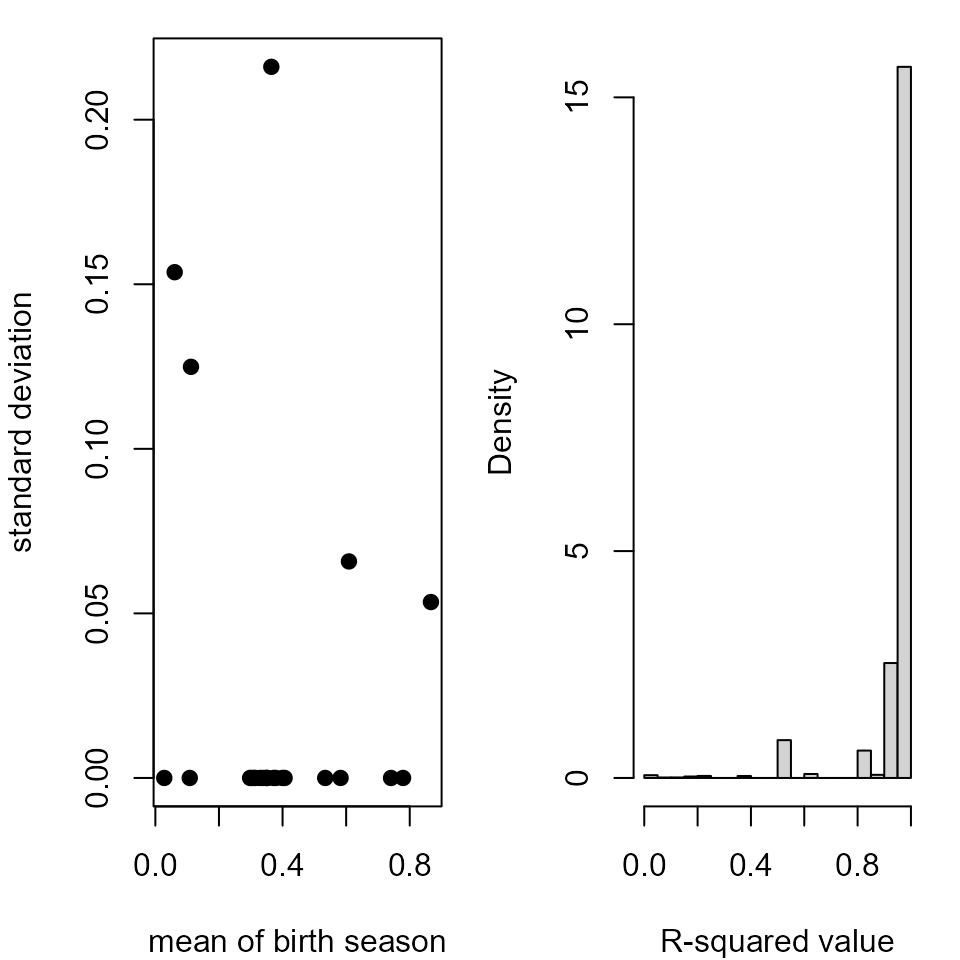

Implement the SCEM and Cosine method on the Armenia data
results = SCEM(armenia,bandwidth = -0.33)
cosine = makeFits(armenia,method ="OLS")
rownames(cosine) = 1:nrow(cosine)
results$results$Cosine = cosine$birth
dif = abs(results$results$Cosine - results$results$Season)
results$results$Difference = apply(cbind(dif,(1-dif)),1,min)
results$results$R = cosine$Pearson
rrr.a = results$results[order(results$results$Cluster),]
# Storing the birth seasonality estimates from two methods
c.armenia = results$results$Cosine
s.armenia = results$results$SeasonPrepare relevant plots for the above analysis
# Plotting the estimates of birth seasonality from the two methods
plot(c.armenia,s.armenia,xlim = c(0,1),ylim = c(0,1),pch = 19)
abline(0,1)
legend("topleft","Tsaghkahovit")
title(xlab = "estimated birth seasonality from cosine method",ylab = "estimated birth seasonality from SCEM",outer = TRUE, line = 2)
# Plotting the graphs of the clusters for Armenia data
gnum = max(results$results$Cluster)
oldpar = par(mar=c(1.5,1.5,1,1), mfrow=c(2,2),oma = c(4, 4, 1, 1))
for(i in 1:gnum){
if(length(results$groups[[i]])>1){
cc = as.character()
plot(c(0,40),c(-14,0),type = "n",axes = T,xlab = "",ylab = "",xlim = rev(range(c(0,40))))
for(j in 1:length(results$groups[[i]])){
tt = armenia[[results$groups[[i]][j]]]
lines(tt$distance,tt$oxygen,lty = j)
cc = c(cc,paste(tt$lab[1],tt$ID[1],sep = ""))
}
legend("topleft",legend = cc,lty = c(1:j),lwd = 2)
}
}
title(xlab = "distance from CEJ (mm)",ylab = expression(delta^18*O[VPDB]*' (per mil)'),outer = TRUE, line = 2)
par(oldpar)Use Armenia data to show the sensitivity to initialization (for Cosine method)
# Fix the initial values of amplitude and intercept
amp = seq(1,10,by=0.5)
int = seq(-25,0,by=0.5)
# Find the estimate of birth seasonality, period, delay and the R^2 for all cases
cosfit.birth = array(0,dim = c(length(amp),length(int),length(armenia)))
cosfit.period = array(0,dim = c(length(amp),length(int),length(armenia)))
cosfit.delay = array(0,dim = c(length(amp),length(int),length(armenia)))
cosfit.R = array(0,dim = c(length(amp),length(int),length(armenia)))
for (i in 1:length(amp)){
for (j in 1:length(int)){
dd = makeFits(armenia,amp[i],int[j],method="initial")
cosfit.birth[i,j,] = dd$birth
cosfit.period[i,j,] = dd$X
cosfit.delay[i,j,] = dd$x0
cosfit.R[i,j,] = dd$Pearson
}
}
birth.means = numeric(length(armenia))
birth.var = numeric(length(armenia))
for (i in 1:length(armenia)){
birth.means[i] = mean(c(cosfit.birth[,,i]))
birth.var[i] = var(c(cosfit.birth[,,i]))
}
# Plots of the model fits to show the sensitivity to initial conditions
oldpar2= par(mfrow = c(1,2),mar = c(4,4,1,1))
plot(birth.means,sqrt(birth.var),xlab = "mean of birth season",ylab = "standard deviation",pch = 19)
hist(c(cosfit.R^2),25,freq = F,xlab = "R-squared value",main = "")
par(oldpar2)